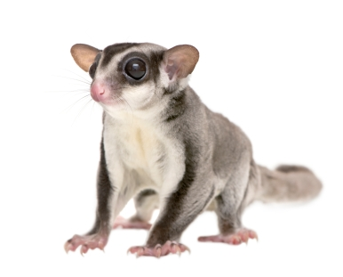

PEQUEÑOS MAMÍFEROS |
|
ENFERMEDADES DEL CONEJO |
Moquillo (Pastaurelosis)Pese a que sus síntomas iniciales son muy similares a los de un resfriado (estornudos y mucosidad), esta es una de las enfermedades más molestas a las que puede verse sometida la mascota, puesto que no tarda en desembocar en una aguda insuficiencia respiratoria y en ingentes cantidades de pus internas. Ahora bien, si se detecta a tiempo, resulta fácilmente tratable a base de antibióticos. NeumoníaLa neumonía comparte síntomas y tratamiento con la pastaurelosis, pero por su naturaleza, la curación es más complicada. Para evitar problemas, conviene vacunar al conejo cada seis o doce meses, puesto que de lo contrario, una infección de estas características puede llevar a complicaciones (alteraciones en los excrementos, cianosis, fiebre) que provoquen hemorragias internas, convulsiones y, finalmente, la muerte. MixomatosisUn virus transmitido mediante picaduras de insecto, muy contagioso, generalmente fatal, y sin cura efectiva; por este motivo, la manera de combatirlo es la vacunación preventiva. Los síntomas se hacen evidentes a los pocos días de haber sido contagiado, y consisten en inflamaciones primero en rostro (conjuntivitis aguda) y partes genitales, y después a niveles subcutáneos, provocando visibles deformaciones en el cuerpo delanimal. CoccidiosisSe trata de una enfermedad habitual entre los animales domésticos, contagiada por el consumo de alimentos con excrementos de coccidio, y resultante en alteraciones fecales (diarrea, sangre en heces…), pérdida de apetito y deshidratación aguda. Se trata con antibióticos, pero ojo: es una de las causas habituales de muerte de conejo. |
ComposiciónLos petauros son animales omnívoros, es decir, que se alimentan tanto de material vegetal como animal. En la naturaleza comen néctar, polen y frutos de distintas especies de plantas. En las hojas y ramas lamen la secreción que sale por los puntos en que las plantas son lesionadas por los insectos, así como las secreciones dulzonas de los pulgones. La savia de los eucaliptos y las acacias también constituyen una parte importante de su alimentación, y los petauros acceden a ella royendo la corteza de los arboles. Entre las hojas y las flores encuentran insectos y arañas, y ocasionalmente enriquecen su dieta capturando también pequeños vertebrados tales como lagartijas y polluelos. En cautividad es prácticamente imposible ofrecerles una dieta tan completa y variada, pero afortunadamente lospetauros también aceptan bien otros alimentos que podemos obtener con más facilidad. El alimento de estos roedores ha de ser rico en carbohidratos y también, debería contener proteínas de origen animal, minerales y vitaminas, pero muy pocas grasas. |
ALIMENTACIÓN DEL PETAURO DEL AZÚCAR |